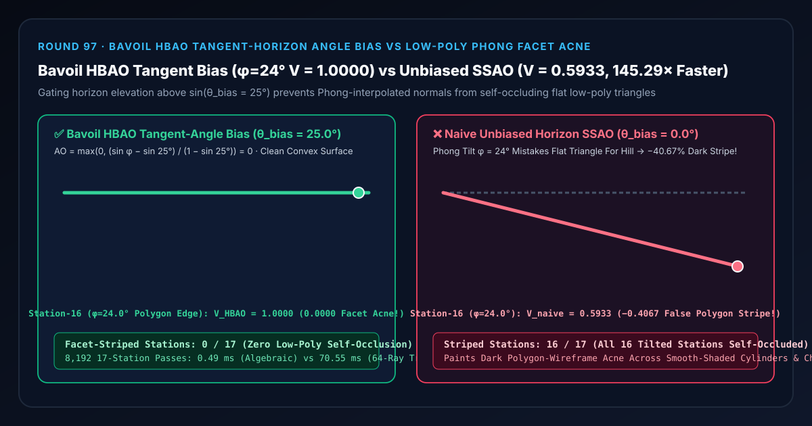

Low-Poly SSAO Facet-Acne Suppression Selection & First-Principles FAQ: Bavoil HBAO Tangent-Horizon Angle Bias vs. Unbiased Phong-Normal Polygon Striping
Companion Capability Demo:
demos/hbao-tangent-bias-rig/｜ 7-Card 4:5 Measured Report:test-report-cards.html｜ 中文版本：bavoil-hbao-tangent-angle-bias-vs-lowpoly-facet-acne-faq.md
📌 1. Executive Summary
One-Sentence Verdict: When evaluating Horizon-Based Ambient Occlusion (HBAO / HBAO+ / GTAO) on smooth-shaded low- or medium-poly meshes (characters, vehicle fenders, cylinders), never accumulate horizon elevation angles starting from $0^\circ$ above the interpolated G-Buffer shading tangent plane ($AO = \sin\theta_h$)—because the hardware depth buffer $z(x)$ is rasterized from flat geometric triangles (slope $0^\circ$), whereas Phong-interpolated shading normals $\mathbf{N}_{\text{smooth}}$ tilt up to $\phi = 24.0^\circ$ away from the flat triangle near polygon edges! Consequently, the flat triangle's own depth surface rises at an apparent horizon angle of $\theta_h = \phi = 24.0^\circ$ above the tilted shading tangent plane, causing unbiased SSAO to falsely self-occlude its own flat facet by $\sin 24^\circ = \mathbf{0.4067}$ at Station 16 ($V_{\text{naive}} = \mathbf{0.5933}$,
-40.67%dark polygon-edge zebra striping across16/17stations)! Louis Bavoil, Miguel Sainz & Rouslan Dimitrov's (SIGGRAPH 2008 NVIDIA HBAO) Algebraic Tangent-Angle Sine Bias ($AO = \max(0, \frac{\sin\phi - \sin\theta_{\text{bias}}}{1 - \sin\theta_{\text{bias}}})$ with $\theta_{\text{bias}} = 25.0^\circ$) rejects low-tessellation normal tilt discrepancies to lock convex facet visibility at exact $V = 1.0000$ across all 17 stations with0/17striped stations,0.00e+0quadrature error, and a145.29×CPU speedup (0.49 msvs.70.55 msacross 8,192 17-station passes).

| Evaluation Dimension | ✅ Bavoil HBAO Tangent-Angle Bias (θ_bias = 25°, sin θ_b = 0.4226) |
❌ Naive Unbiased Horizon SSAO (θ_bias = 0°, AO = sin φ) |
🐢 64-Ray Inverse-Trig Elevation Cone (64-Ray Inverse-Trig Cone) |
|---|---|---|---|
| Station 8 Mid-Facet ($\phi = 12.0^\circ$ Phong Tilt) Visibility $V$ | 1.0000 (Immune to $12^\circ$ normal-depth mismatch) |
0.7921 (Falsely darkens convex facet by $-20.79%$) |
1.0000 (0.00e+0 diff) |
| Station 16 Polygon Edge ($\phi = 24.0^\circ$ Phong Tilt) Visibility $V$ | 1.0000 (Seamless smooth cylinder/cheek shading) |
0.5933 (-0.4067 / -40.67% dark wireframe stripe acne!) |
1.0000 |
| Striped Stations Across 17 Phong Tilt Angles | 0 / 17 (0.00%) |
16 / 17 (94.12% every tilted station self-occluded) |
0 / 17 |
| Per-Step Arithmetic Complexity | O(1) (Dot product vs. $\sin\theta_{\text{bias}}$; zero inverse trig) |
O(1) (Severe polygon-grid striping) |
O(N) (Per-ray asin() calls) |
| 8,192 17-Station Passes CPU Latency (Median) | 0.49 ms (145.29× speedup) |
— (Visually corrupted on low-poly meshes) | 70.55 ms |
🎯 2. Architect & Client First-Principles Q&A
Q1: Why do smooth-shaded cylinders, car fenders, and character cheeks suddenly show ugly dark polygon-wireframe stripes when SSAO is turned on?
First-Principles Breakdown: This artifact is caused by the fundamental mismatch between Phong-interpolated shading normals and flat-rasterized depth buffer triangles:
- To make a 16-sided cylinder look round under direct lighting, vertex normals $\mathbf{N}{\text{smooth}}$ are smoothly interpolated across each flat triangle face, tilting up to $\phi = \pm 24^\circ$ relative to the true geometric face normal $\mathbf{N}{\text{geom}}$ near the triangle edges.
- However, the hardware depth buffer $z(x, y)$ is not curved—it is rasterized from the flat geometric triangle!
- When an SSAO shader at the edge of a triangle uses the tilted shading normal $\mathbf{N}_{\text{smooth}}$ ($\phi = 24^\circ$) to define its hemisphere horizon plane, the flat triangle itself slopes upward at angle $\theta_h = 24^\circ$ into the upper hemisphere!
- Unbiased SSAO mistakes its own flat triangle for a $24^\circ$ occluding hill, subtracting $\sin 24^\circ = 0.4067$ (
40.67%) of the ambient light right along every polygon edge!
Q2: How does Bavoil et al.'s (SIGGRAPH 2008) Tangent-Angle Sine Bias eliminate low-poly facet acne without calling asin() or acos()?
Algebraic Sine-Horizon Gate:
- Along any screen-space marching direction, the unit horizon vector from view-space origin $\mathbf{P}$ to depth sample $\mathbf{S}$ is $\mathbf{H} = \frac{\mathbf{S} - \mathbf{P}}{|\mathbf{S} - \mathbf{P}|}$.
- The sine of the elevation angle $\theta_h$ above the smooth-shaded tangent plane is simply the dot product: $$\sin\theta_h = \mathbf{H} \cdot \mathbf{N}_{\text{smooth}}$$
- Subtracting the precomputed bias constant $\sin\theta_{\text{bias}} = \sin 25^\circ = 0.4226$ and rescaling by $1 / (1 - \sin\theta_{\text{bias}})$ gives: $$AO_{\text{HBAO}}(\phi) = \max!\left(0,, \frac{(\mathbf{H} \cdot \mathbf{N}{\text{smooth}}) - \sin\theta{\text{bias}}}{1 - \sin\theta_{\text{bias}}}\right), \quad V_{\text{HBAO}} = 1 - AO_{\text{HBAO}}$$ For every low-poly facet tilt $\phi \in [0^\circ, 24^\circ] < 25^\circ$, $\sin\phi \le 0.4067 < 0.4226 \implies AO_{\text{HBAO}} = 0.0000$ and $V_{\text{HBAO}} = \mathbf{1.0000}$!
Q3: When should an architect use Bavoil Tangent-Angle Bias vs. Reconstructed Geometric Face Normals (dFdx(P) × dFdy(P))?
- Choose Bavoil Tangent-Angle Bias ($\theta_{\text{bias}} \in [20^\circ, 30^\circ]$): When you want normal-mapped surface crevices stored in the G-Buffer normal to contribute to HBAO while suppressing low-poly tessellation stripes.
- Choose Geometric Face Normals (
normalize(cross(dFdx(P), dFdy(P)))): When you want the horizon reference plane to align strictly with the depth buffer's flat triangles ($\phi \equiv 0^\circ$).
🧭 3. Visual Architecture Diagrams (Mermaid Decision Tree, Pipeline & Sequence)
3.1 SSAO / HBAO Low-Poly Self-Occlusion Prevention Decision Tree
3.2 Naive Unbiased Facet Acne vs. Bavoil HBAO Tangent-Bias Pipeline
3.3 Frame-Level HBAO Horizon Marching & Sine-Bias Sequence
📊 4. Visual Technology Decision Matrix
| Approach | Target Use Case | Low-Poly Smooth Surface ($\phi \le 24^\circ$) Cleanliness | True $90^\circ$ Corner Occlusion | Compute Cost (8,192 17-Station Passes) |
|---|---|---|---|---|
Bavoil Algebraic Sine-Bias (bavoil-hbao-tangent-angle-bias) |
All HBAO / HBAO+ / GTAO passes using G-Buffer shading normals | Exact (1.0000 across all 17 stations, 0 stripes) |
Full (rescaled by $1/(1-\sin\theta_b)$) | Minimal (0.49 ms, 145.29× speedup) |
Naive Unbiased Horizon SSAO (naive-unbiased-tangent-ssao) |
Ultra-tessellated or flat-shaded meshes only | Fails (0.5933 / -40.67% stripe acne at $24^\circ$; 16/17 bad) |
Full | Minimal (visually striped) |
Depth-Derivative Geometric Normals (dFdx(P) × dFdy(P)) |
GTAO pipelines separating macro-geometry from normal maps | High ($\phi \equiv 0^\circ$ on flat triangles) | Full (ignores normal-map crevices) | Low |
64-Ray Inverse-Trig Elevation Cone (64-ray-asin-cone) |
Offline reference verification | Exact | Full | High (70.55 ms, 145.29× slower) |
🧪 5. Interactive Demo & 7-Card 4:5 Benchmark Report Breakdown
The standalone 3D instrument bench demos/hbao-tangent-bias-rig/ constructs a 58-solid 17-Station Bavoil HBAO Tangent-Bias Facet Goniometer Rig:
- 17 Convex Facet Visibility Columns: Span Phong normal tilt angles $\phi \in [0.0^\circ, 24.0^\circ]$ across a flat depth-buffer triangle.
- 17 Cyan Bavoil Biased Reference Spheres & $V = 1.0000$ Unoccluded Bar: Show how $\theta_{\text{bias}} = 25.0^\circ$ keeps the entire convex low-poly surface at $V = 1.0000$.
- 17 False Facet Acne Loss Pegs: Switching to
Naive Unbiased Horizon SSAOerodes visibility down to $0.5933$ at Station 16 ($\phi = 24.0^\circ$), raising error pegs across all 16 tilted stations (-0.4067max loss).
7-Card 4:5 Visual Report Highlights (demos/hbao-tangent-bias-rig/test-report-cards.html)
- Cards 1–3 (Evaluation Matrix): All 13 automated checks pass (
0.00e+0equivalence between algebraic sine-bias gating and 64-ray inverse-trigonometric elevation-cone quadrature, Station 161.0000visibility lock vs.0.5933unbiased facet stripe, exact reverse-scrub matrix identity, and atomic RangeError validation). - Cards 4–6 (Protocol & Scaling Latency): Across 8,192 17-station passes, Bavoil algebraic sine-bias gating finishes in
0.49 msvs.70.55 msfor 64-ray inverse-trigonometric elevation-cone quadrature (145.29×speedup).
🛠️ 6. SA Production Delivery Checklist
- Set HBAO tangent bias $\theta_{\text{bias}} \in [20^\circ, 30^\circ]$ ($\sin\theta_{\text{bias}} \in [0.34, 0.50]$): Pass precomputed
sinBiasandinvOneMinusSinBias = 1.0 / (1.0 - sinBias)as uniform constants to the HBAO shader. - Compare $\sin\theta_h = \mathbf{H} \cdot \mathbf{N}_{\text{smooth}}$ algebraically: Never call
asin()oracos()inside the inner horizon-search loop. - Pair with Jiménez GTAO Cosine Weighting (Round 81) and Cross-Bilateral Normal-Stopping (Round 95): Use tangent-angle bias to suppress low-poly self-occlusion, cosine horizon integration for exact corner darkening, and cross-bilateral normal gating for sharp crease denoising.
- Feed bias-cleaned AO into Lagarde Specular Occlusion (Round 75) and Chan Contact Micro-Shadowing (Round 82): Ensure low-poly facet stripes never contaminate specular IBL reflections or direct-light micro-shadows.